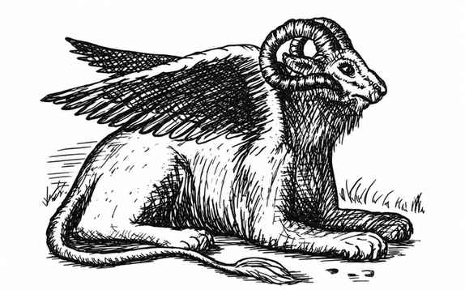
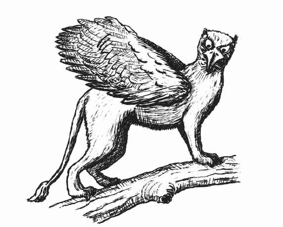

狮身人面像 · Sphinx
公狮身人面像 · Androsphinx
 |
|
公狮身人面像是力量强大、体型巨大的雄性狮身人面像，以两只巨掌近战攻击；它能像 6 级人类牧师一样施展牧师法术。它通常避开雌性狮身人面像，因为不满后者更高的智力和中立阵营。狮身人面像能说本族所有语言以及人类通用语。
公狮身人面像每天可咆哮 3 次，声音可传出数英里。第一次需被激怒，第二次需极度愤怒，第三次需陷入狂怒。第一次咆哮：36 寸内所有生物须进行恐惧豁免（如同魔杖），失败者惊慌逃跑 3 轮。第二次咆哮更响：20 寸内生物须进行石化豁免，否则因恐惧麻痹 1–4 个战斗轮；此外，距离其 3 寸内的生物会耳聋 2–12 个战斗轮，食人魔体型或更大的生物（或有保护听觉器官者）不受影响。第三次咆哮：24 寸内生物须进行魔法豁免，失败则力量降低 2–8 点，持续同样数量的战斗轮；其嘴部 3 寸半径内的生物会被掀翻，食人魔体型或更大的生物除外。被掀翻者还须进行龙息豁免，否则昏迷 2–12 个战斗轮；未被掀翻者受到 2–16 点伤害（狮子或半狮子除外）。第三次咆哮还会影响 3 寸内的石头，除非通过石化豁免，否则会被震裂。
公羊狮身人面像 · Criosphinx
 |
|
公羊狮身人面像长着公羊头，通常出没于林地。它们重视财富，经常向路人敲诈，以高额贿赂换取安全通行。战斗时用两只前爪攻击，或用长角的羊头猛烈冲撞。它们迷恋雌性狮身人面像，但后者厌恶它们。公羊狮身人面像会说自己的语言、狮身人面像通用语和动物语。
雌狮身人面像 · Gynosphinx
 |
|
雌狮身人面像是公狮身人面像的雌性对应，既博学又睿智。她们崇尚中立并珍爱宝石等财富，只有得到报酬才会帮助人类；报酬也可以是谜语、诗歌、散文、知识或公狮身人面像的所在地。若不给报酬，她们会毫不犹豫地吞食冒犯者。
雌狮身人面像每天各能使用一次：侦测魔法、阅读魔法、阅读语言、侦测隐形、定位物品、解除魔法、聆听术、透视术、移除诅咒和传奇传闻；每周各能使用一次符文相关能力。她们会说其雄性同族所知的全部语言。
鹰头狮身人面像 · Hieracosphinx
 |
|
鹰头狮身人面像邪恶而贪婪，出没于丘陵，偏好捕食温血生物，人类尤其是它们喜爱的猎物。它们每轮用前爪和喙攻击，并像其他同族一样高度重视财宝；有时也会被某些邪恶而强大的生物驯服为坐骑。